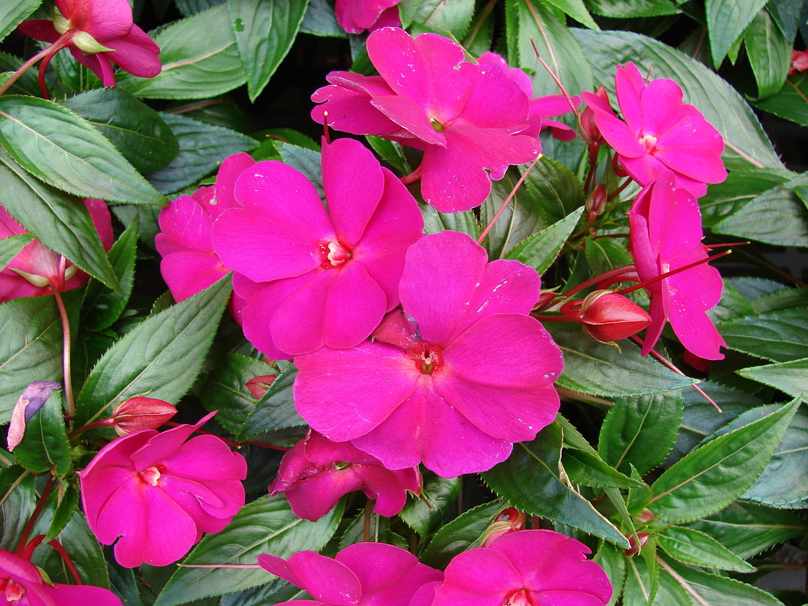
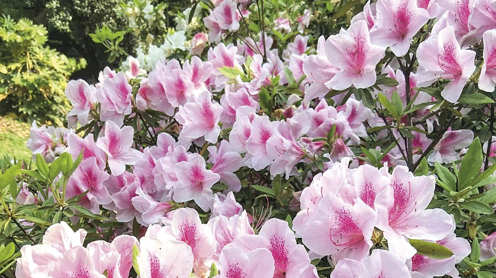
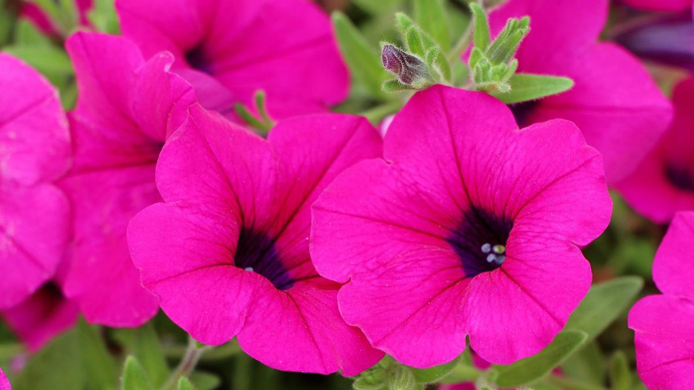

Plantas
Alegria Brasilera
La Alegría brasileña es una planta perenne de hoja verde oscuro que se adapta bien tanto a la luz indirecta como a la sombra. Sus pequeñas flores violetas aparecen en racimos en primavera y verano. Es una planta de fácil cuidado y es ideal para interiores y exteriores.
Azaleas
Las azaleas son arbustos o árboles de hoja perenne o caduca, que tienen flores vistosas en tonos blancos, rosados, rojos, morados o amarillos. Las flores aparecen en racimos en la primavera o principios del verano, y las hojas pueden ser verdes brillantes o de diferentes formas y tamaños. Son populares como plantas ornamentales, pero algunas especies son tóxicas para los animales domésticos.
Petunias
Las petunias son una planta anual originaria de Sudamérica que se cultiva comúnmente por sus atractivas flores en forma de trompeta. Las flores de las petunias pueden ser de diversos colores, incluyendo rosa, púrpura, entre otros. Las hojas de la petunia son verdes y ovaladas y su tamaño varía según la variedad de la planta. Las petunias son ideales para añadir color y alegría a jardines.
